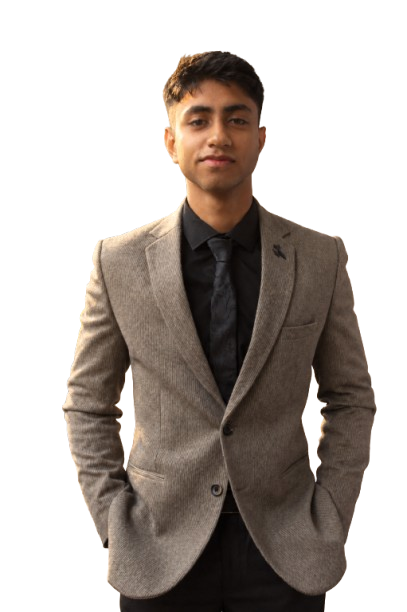
Dev Garg
From building things out of cardboard and experimenting with small projects, to learning guitar, training various sports, designing in CAD, writing software, and exploring physics, I've always found myself learning by doing.
I don't really like keeping my interests in separate boxes. I enjoy the process of taking something I don't understand, asking questions, figuring it out, and eventually making something of my own.
This portfolio is a collection of those things: the projects, skills, experiments, and pursuits that have shaped the way I learn and create.
I've always been curious.
I've always been drawn to understanding how things work and then trying to make something of my own. From physics and engineering to music, training, building, software, my interests are varied, but they all come from the same place: curiosity.
I like learning by doing, figuring things out along the way, and seeing an idea become something real.
I understand. I build. I improve.
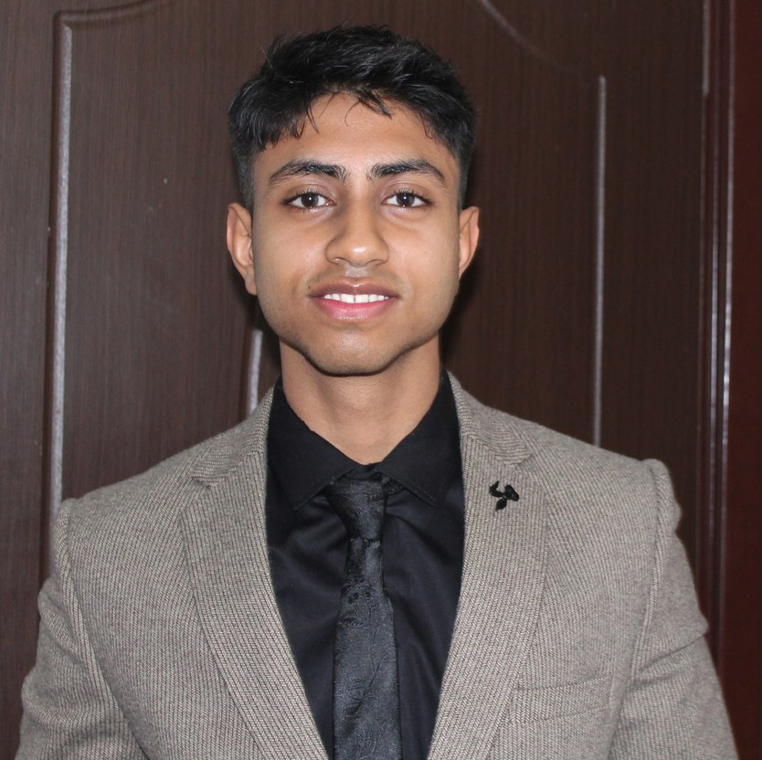
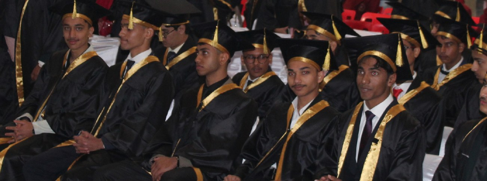
Completed Class X with an aggregate of 80%. With certificates of Merit in IT & Hindi.
Completed Class XII with PCM and History as an optional subject, with an aggregate of 70%. With certificate of merit in English.
Currently pursuing Bachelor of Technology in Mechanical Engineering, with an expected graduation in 2030.
I enjoy taking an idea from something that exists only in my head and turning it into something real. Whether I'm working with physical materials, designing something, or figuring out how something should work, I rely on problem solving, engineering thinking, and a willingness to experiment.
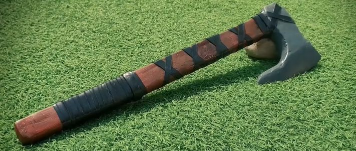
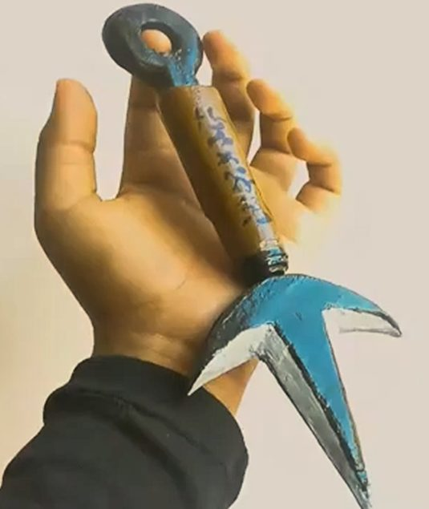
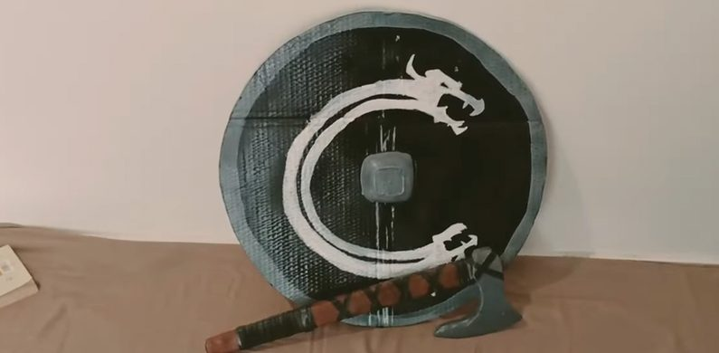
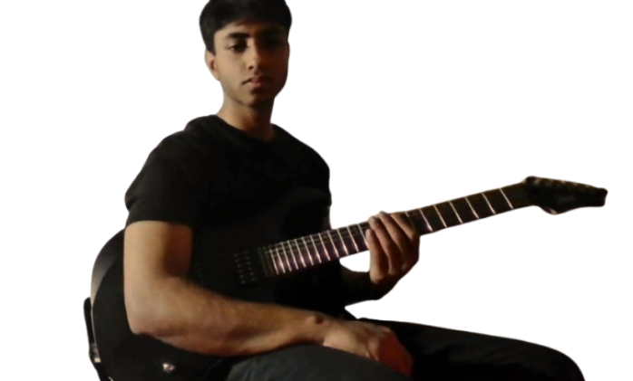
Nine years of playing.
I've been playing guitar for 9 years, teaching myself through practice, experimentation, and a lot of listening.
My interests in music are pretty broad, and I've explored everything from different genres and techniques to music theory and improvisation.
I particularly enjoy playing solos on electric guitar exploring phrasing, technique, and improvisation.
On acoustic guitar, I enjoy fingerstyle playing, where melody, harmony, and rhythm come together in a single performance.
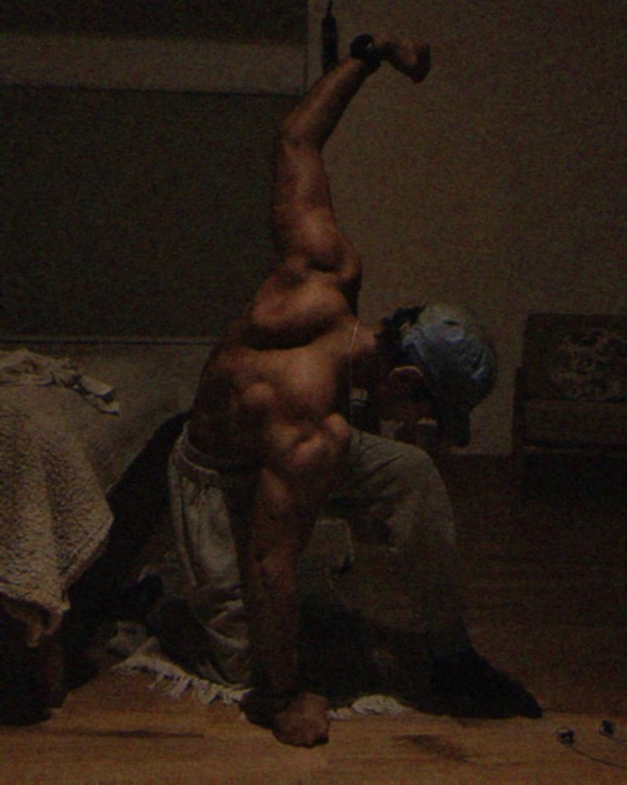
I've been training calisthenics for 3 years, with a focus on strength, body control, and progressive overload through weighted movements.
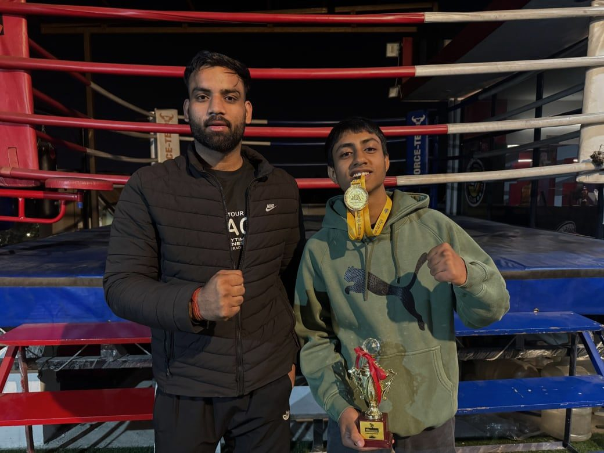
2024 Khel Mahakumbh Boxing Gold medalist in under 17 featherweight category.
Things I've built, designed & experimented with.
From physical builds to software and engineering projects, these are some of the things I've worked on to turn ideas into something tangible.
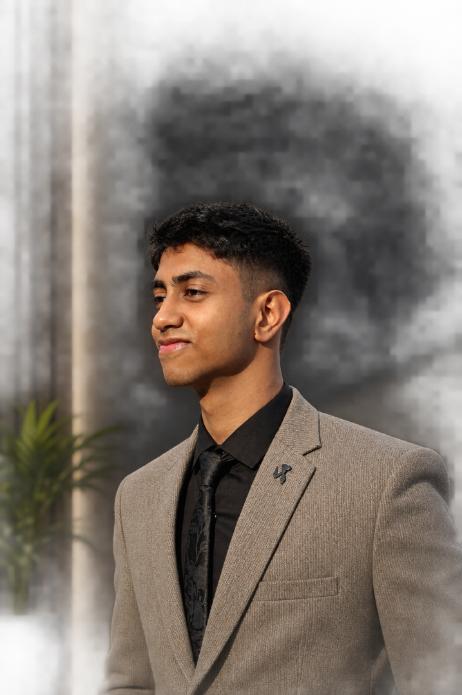
Engineering reconstruction of the 1991 McLaren MP4/6 while understanding the engineering behind the machine.
RESEARCH → SCALE → CAD → DESIGN → FABRICATION → REFINE
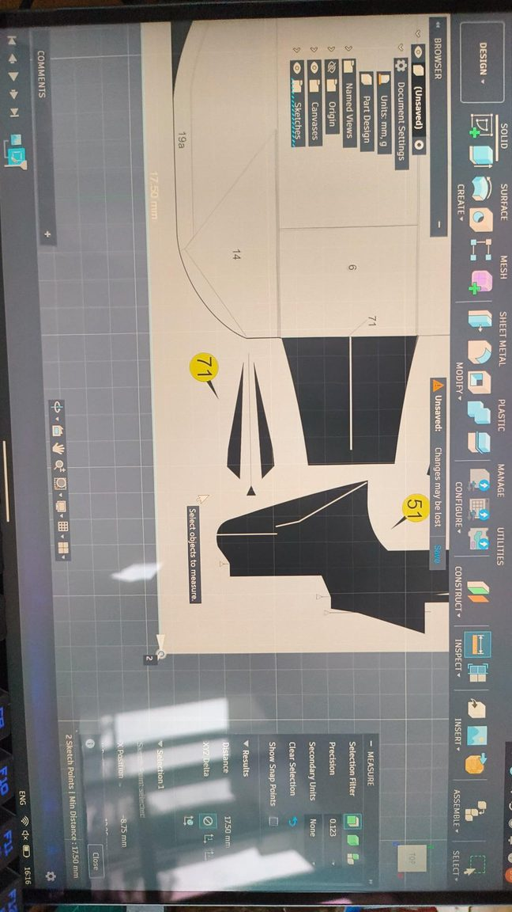
I started with existing models and blueprints of the McLaren MP4/6, to which later I modified and reconstructed in accordance to my purpose.
I made detailed sketches, studying the geometry and design of the car which helped me build a strong understanding of the key elements of the vehicle.
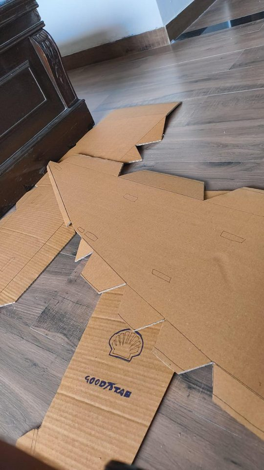
I then scaled the new model to a 1:1 scale, taking reference from the official blueprints provided by the McLaren Racing team. I then sliced the model into printable templates using Pepakura Designer and made custom templates which I could then transfer onto cardboard to start the fabrication.
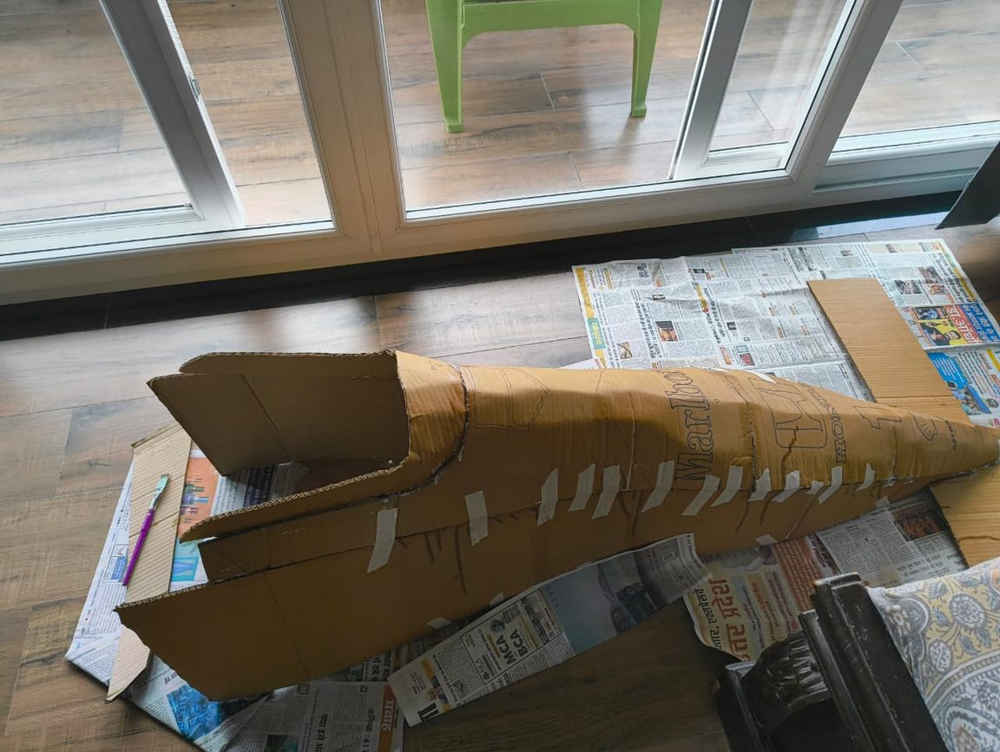
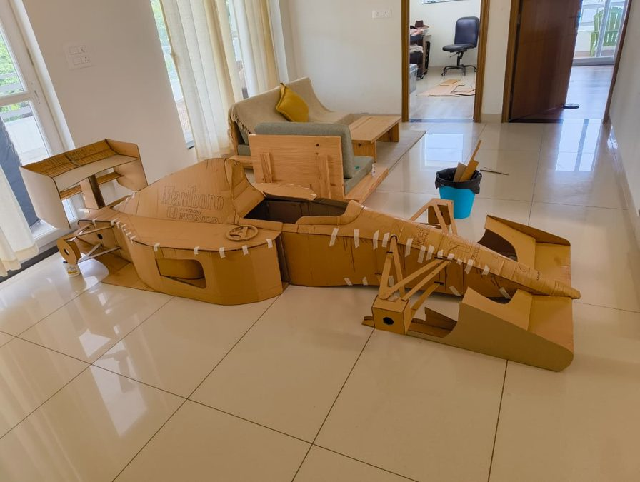
The fabrication of the car took me 4 months to complete, as I traced every piece and cut out every piece by hand. Once the fabrication was done, I proceeded with the filling and painting part of the project.
I encountered several challenges and problems while building this project, all of which I was able to overcome and complete this project.
From start to finish, the car took me 5 months to fully design, reconstruct, study, make templates, fabricate and paint. This project helped me enhance my designing and fabrication skills.
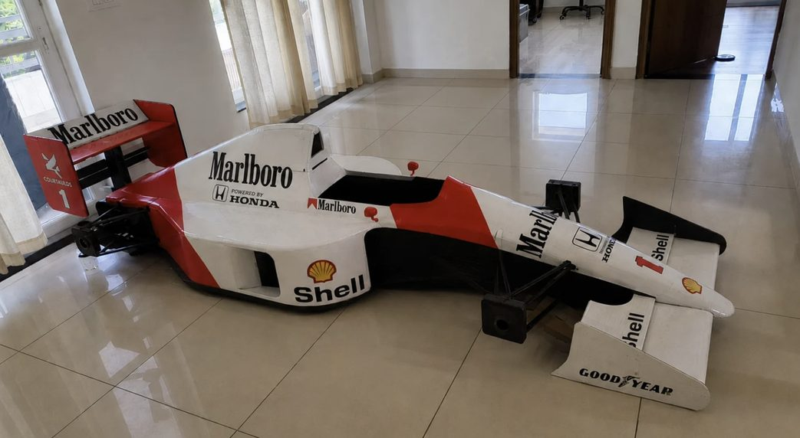
Personal web application
Existing solutions didn't give me the flexibility I wanted for planning attendance across different subjects.
I built my own Progressive Web Application to track classes, attendance, and how many classes I could safely miss while maintaining the required attendance.
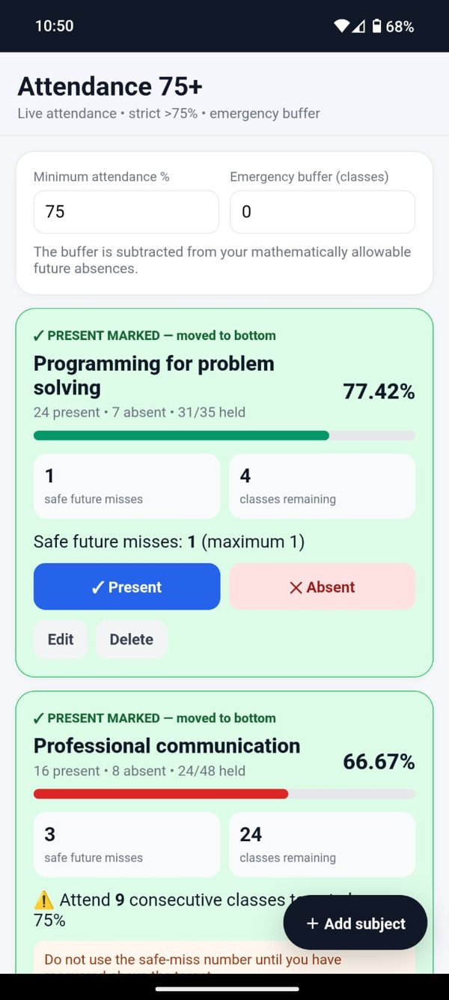
It runs from a GitHub repository as a website, and I installed it on my phone so it works like a regular app.
I added a setting for a safety-net number of classes. It is subtracted from the mathematically allowable misses, so the app never counts on me using every last one.
It took about 3-4 hours to set up, and I use it every day. It keeps my mind at ease.
New projects will be added here.
Interested in my work, want to collaborate, or simply want to get in touch? You can find me here.